О сайте и обо мне
Наконец я принял решение создать сайт, через которой смогу познакомить всех интересующихся литературой, культурой и общественной жизнью Беларуси, так сказать, в оригинале (на белорусском языке). Моё творчество, как и моя жизненная позиция, на мой взгляд, недостаточно известна как у нас в стране, так и за её пределами – в России, в Украине… До этого я попробовал выкладывать свои белорусскоязычные стихи на сайте «Поэзия» и убедился, что по-белорусски читают и понимают многие россияне. Отзывов набралось достаточно много, но, к сожалению, после вынужденной продолжительной паузы я утратил пароль и мне пришлось «заморозить» свою страницу… Итак! Начнём «с нуля», но уже «в другом формате». Коротко о себе. Я – поэт, поэт-песенник, с некоторых пор публицист и прозаик, редактор и издатель, а ещё композитор и общественный деятель. Имею больше двух десятков книг, теперь пишу эссе и прозу, готовлю к изданию несколько новых книг. Родился в 1950 году в крестьянской семье в д. Осовцы Дрогичинского района, что на Брестчине. В 1975-м окончил Брестский пединститут им. Пушкина. Работал учителем, журналистом, с 1994 года – член Союза белорусских писателей. С 1991 года живу в Минске, десять лет уже на пенсии. Веду активный образ жизни, много пишу и издаюсь, организовал и редактирую два литературных альманаха «Гоман» и «Талент», возглавляю оргкомитет по созданию «Экспериментального общества любителей прекрасного» -- по-белорусски ЭТАП (“Эксперыментальнае таварыства аматараў прыгожага”). Убеждённый либерал, приверженец общечеловеческих и христианских ценностей. Это и всё остальное – в творчестве!

Хата в Климентиново спустя десятилетия после переезда родителей в д Осовцы (фото сделано мною в 80-е годы прошлого столетия)

Мои близкие родственники (мама в центре) возле дома в Осовцах. Лето 2009 года.

Сестра Галина.

Я до армии. 1967 год.
Книжки моего детства
Здесь обложки только некоторых книг, прочтённых мною за школьные годы. А всего их можно насчитать не одну сотню. Где-то в классе шестом я завёл тетрадку и стал записывать туда фамилии авторов и названия книг. Вспомнил и те, которые прочёл раньше, как только освоил «Букварь». Хорошо помню, что первой книгой была маленькая книжонка на родном языке «У роднай сталіцы». Это был небольшой рассказ деревенского мальчика, который приехал в гости к дяде. В книжке находилось много красочных рисунков площадей и главных улиц Минска. Как я завидовал тому мальчишке и как жалел, что “у роднай сталіцы” нет у меня родственников! Помню, ещё больше жалел, что родился не в городе. А потом была “Першакласніца” Евгения Шварца и сказки, сказки, сказки… Были увлечения приключенческой литературой, повестями о жизни школьников-ровесников, книгами о войне, о пионерах-героях, классикой и фантастикой. Об этом и о тех чувствах, ощущениях, мыслях и переживаниях после прочтения в детстве каждой книжки давно собираюсь написать эссэ…
 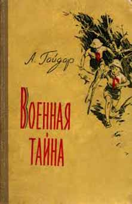
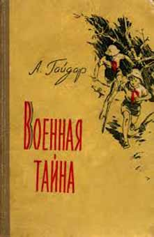
 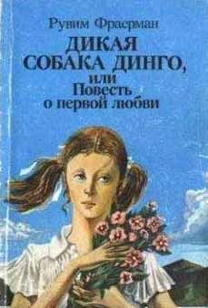
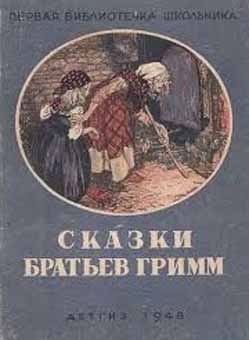
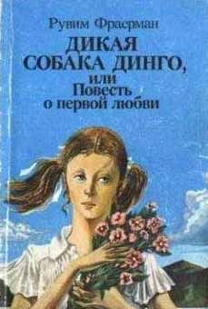
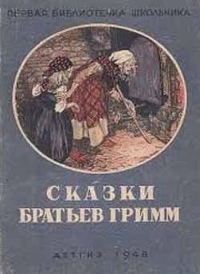
 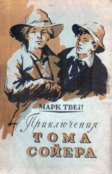
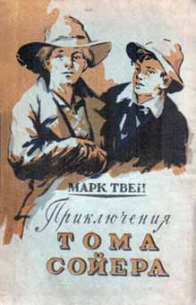


 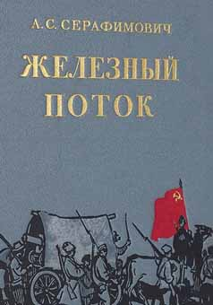
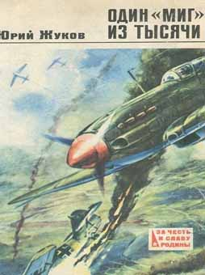
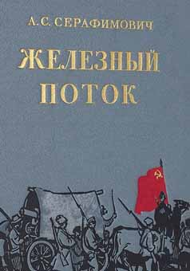
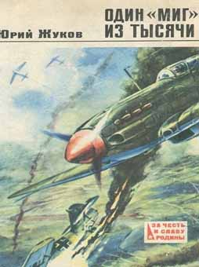

 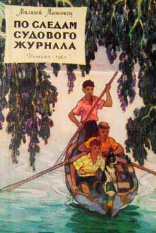
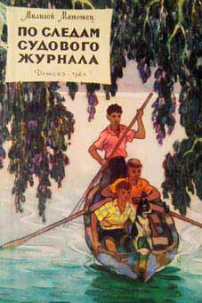